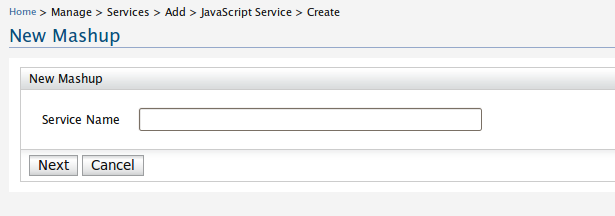
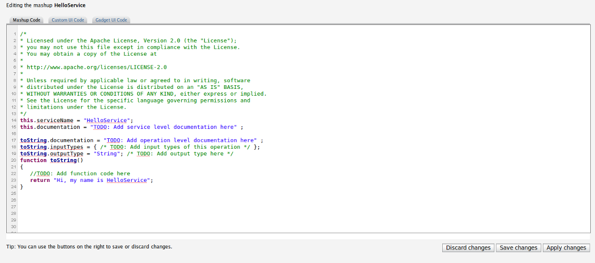
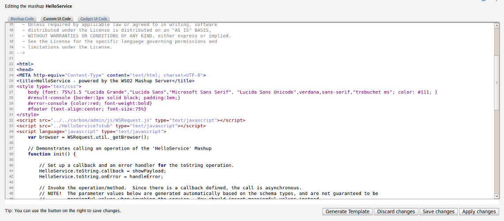
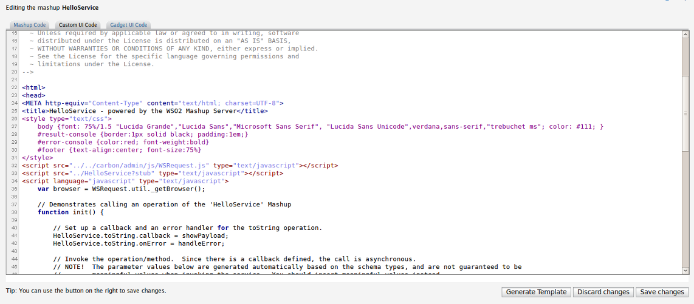
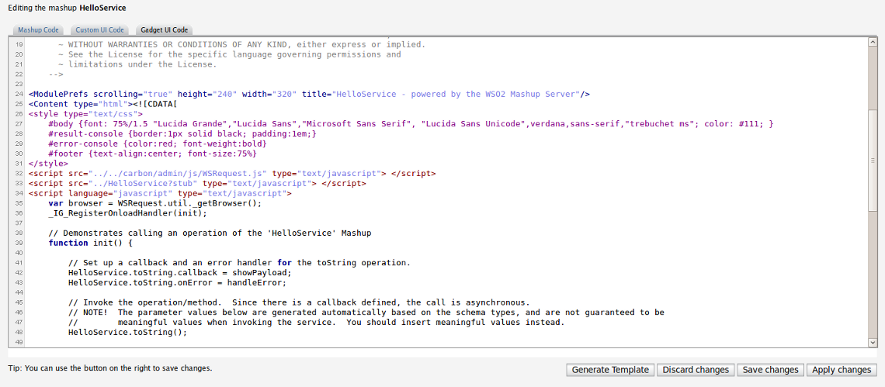

Javascript service creation
The following guide demonstrates how a Js service can be created and deployed. Also provide documentation on custom UI generation and Gadget UI code generation.
Step 1 : As shown in the image below, once the create link is clicked a page will prompt asking for the service name.

Step 2 : Once a service name is given a dummy service will be created with a HelloWorld like operation. This is a template generated by the Mashup Server and can be modified or replaced by a real javascript service. Changes should be saved before proceeding to any other step. The editor UI also facilitate apply modifications feature, where you can apply the modifications and proceed with more changes.

Once the service is saved, it will be deployed as a Mashup service, navigating via service dashboard edit Mashup, further modifications to the Mashup can be done. i.e. Create custom UI, generate Gadget UI code

 
Related articles and samples can be found at product documentation